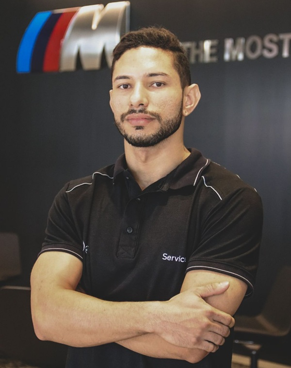
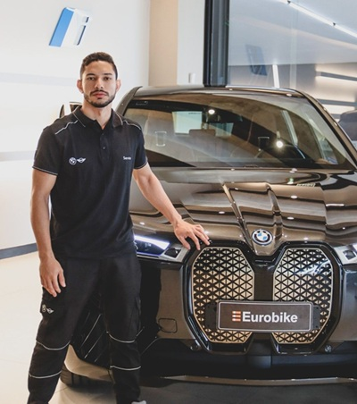
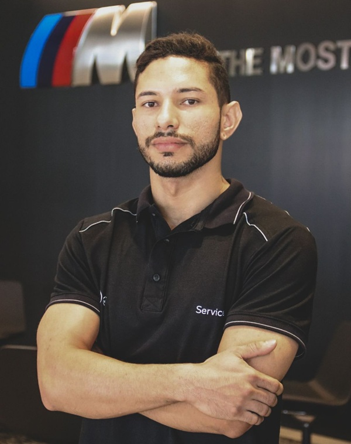
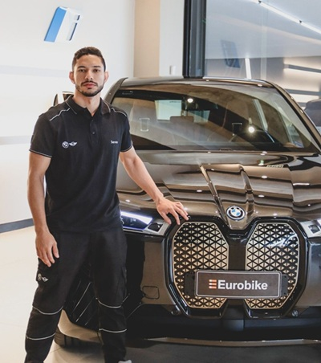
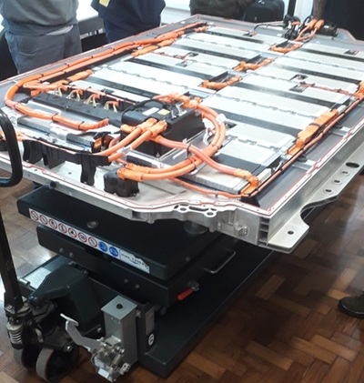
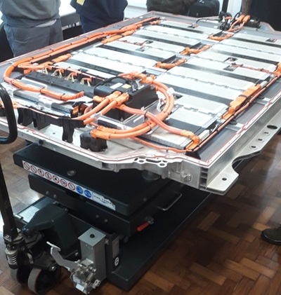

Resumo
Sou estudante de Engenharia Elétrica, apaixonado por tecnologia e inovação. Atuo como desenvolvedor de software com foco em soluções web e automação, aliado a uma sólida experiência prática no setor automotivo, trabalhando com veículos premium eletrificados. Tenho perfil proativo, com forte senso de responsabilidade e visão de dono nos projetos e negócios em que estou envolvido. Valorizo o trabalho em equipe, a comunicação clara e a construção de boas relações interpessoais. Estou sempre em busca de aprendizado contínuo e desafios que me impulsionem a crescer profissionalmente e pessoalmente.
Formação Acadêmica & Técnica
Projetos
Experiência completa no processo de fabricação aditiva. Realizo a modelagem 3D de peças funcionais e estéticas, preparo os arquivos para impressão com ajustes otimizados de parâmetros, e opero impressoras FDM utilizando filamentos como PLA, PETG e ABS.
Desenvolvo soluções de Internet das Coisas utilizando plataformas como ESP32, Arduino UNO e ATTINY32. Experiência prática em projetos que envolvem monitoramento remoto, automação residencial, controle via Wi-Fi/Bluetooth e integração com sensores e atuadores. Utilizo ambientes como Arduino IDE e Platforma IO, com programação em Python. Integro IoT com prototipagem rápida via impressão 3D, utilizando ESP32, Arduino UNO, raspberry PI e ATTINY32 para criar dispositivos funcionais com design personalizado, conectividade e controle inteligente.


 





 
